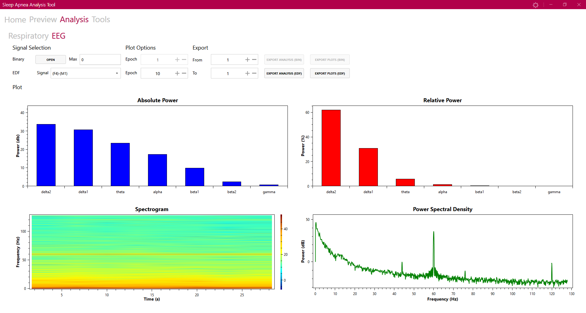

Sleep Analytic Toolkit for Clinical Professionals

Polysomnography is a sleep study in which multi-parametric, physiologic measurements (blood pressure, respiration, EEG, ECG, etc.) are performed in order to diagnose and study sleep disorders. Various software tools are available for visualization of signals and annotation of sleep events such as sleep apnea. However, most of them are properitary and very few of them provide enough analytic power for research, which hinders the progress of sleep research.
As such, there's a need for an open-source toolkit that allows for rapid and efficient data prototyping without sacrifice of analytic power. To that end, I led a team of three undergraduate students to develop a user-friendly software toolkit using Windows Presentation Foundation(WPF) and MATLAB. It's basic functions include previewing, channel selection, efficient data storage and retrival, respiratory analysis, and EEG analysis.
Open an EDF File
Previewing and Exporting to Binary
Analysis and Tools
Program options
Technologies used:
- GUI: Windows Presentation Foundation (WPF), MahApps.Metro UI toolkit, OxyPlot
- Signal Processing: MATLAB Runtime, C#
Collaborators: Azadeh Yadollahi, Kunal Choudhary, Mohamed Maria, Zabeeh Ur-Rahman